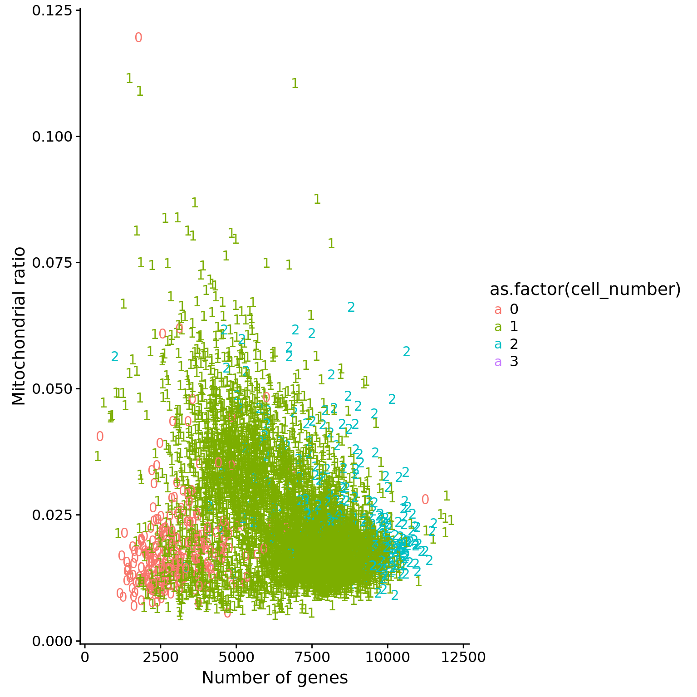

QC of single cell libraries
PoYuan Tung
2017-09-13
Last updated: 2018-06-30
Code version: faf8290
This is for qc of the samples. Based on obsevation under the scope and the sequencing results, samples with bad quality will be removed.
Setup
library("cowplot")
library("dplyr")
library("edgeR")
library("ggplot2")
library("MASS")
library("tibble")
library("tidyr")
theme_set(theme_cowplot())
source("../code/functions.R")
library("Biobase")# The palette with grey:
cbPalette <- c("#999999", "#E69F00", "#56B4E9", "#009E73", "#F0E442", "#0072B2", "#D55E00", "#CC79A7")Import data.
getwd()[1] "/home/jdblischak/singlecell-qtl/analysis"eset <- readRDS("../data/eset.rds")
anno <- pData(eset)Total mapped reads reads
## calculate the cut-off
cut_off_reads <- quantile(anno[anno$cell_number == 0,"mapped"], 0.95)
cut_off_reads 95%
1015460 anno$cut_off_reads <- anno$mapped > cut_off_reads
## numbers of cells
sum(anno[anno$cell_number == 1, "mapped"] > cut_off_reads)[1] 5917sum(anno[anno$cell_number == 1, "mapped"] <= cut_off_reads)[1] 1075## density plots
plot_reads <- ggplot(anno[anno$cell_number == 0 |
anno$cell_number == 1 , ],
aes(x = mapped, fill = as.factor(cell_number))) +
geom_density(alpha = 0.5) +
geom_vline(xintercept = cut_off_reads, colour="grey", linetype = "longdash") +
labs(x = "Total mapped reads", title = "Number of total mapped reads", fill = "Cell number")
plot_reads
Unmapped ratios
Note: Using the 5% cutoff of samples with no cells excludes all the samples
## calculate unmapped ratios
anno$unmapped_ratios <- anno$unmapped/anno$umi
## cut off
cut_off_unmapped <- quantile(anno[anno$cell_number == 0,"unmapped_ratios"], 0.65)
cut_off_unmapped 65%
0.3994731 anno$cut_off_unmapped <- anno$unmapped_ratios < cut_off_unmapped
## numbers of cells
sum(anno[anno$cell_number == 1, "unmapped_ratios"] >= cut_off_unmapped)[1] 588sum(anno[anno$cell_number == 1, "unmapped_ratios"] < cut_off_unmapped)[1] 6404## density plots
plot_unmapped <- ggplot(anno[anno$cell_number == 0 |
anno$cell_number == 1 , ],
aes(x = unmapped_ratios *100, fill = as.factor(cell_number))) +
geom_density(alpha = 0.5) +
geom_vline(xintercept = cut_off_unmapped *100, colour="grey", linetype = "longdash") +
labs(x = "Unmapped reads/ total reads", title = "Unmapped reads percentage")
plot_unmapped
ERCC percentage
Note: Beacuse not all samples include ERCC, this is not a good cutoff.
## calculate ercc reads percentage
anno$ercc_percentage <- anno$reads_ercc / anno$mapped
## cut off
cut_off_ercc <- quantile(anno[anno$cell_number == 0,"ercc_percentage"], 0.25)
cut_off_ercc 25%
0.4768398 anno$cut_off_ercc <- anno$ercc_percentage < cut_off_ercc
## numbers of cells
sum(anno[anno$cell_number == 1, "ercc_percentage"] >= cut_off_ercc)[1] 542sum(anno[anno$cell_number == 1, "ercc_percentage"] < cut_off_ercc)[1] 6450## density plots
plot_ercc <- ggplot(anno[anno$cell_number == 0 |
anno$cell_number == 1 , ],
aes(x = ercc_percentage *100, fill = as.factor(cell_number))) +
geom_density(alpha = 0.5) +
geom_vline(xintercept = cut_off_ercc *100, colour="grey", linetype = "longdash") +
labs(x = "ERCC reads / total mapped reads", title = "ERCC reads percentage")
plot_ercc
Spike-in percentage
Note: Using the percentage of all the kinds of spike-in as the cutoff. Instead of 5%, 10% seem to be more reasonable due to different amounts of total spike-in.
## calculate worm and fly reads percentage
anno$spike_percentage <- apply(anno[,19:21],1,sum) / anno$mapped
## cut off
cut_off_spike <- quantile(anno[anno$cell_number == 0,"spike_percentage"], 0.10)
cut_off_spike 10%
0.4880592 anno$cut_off_spike <- anno$spike_percentage < cut_off_spike
## numbers of cells
sum(anno[anno$cell_number == 1, "spike_percentage"] >= cut_off_spike)[1] 547sum(anno[anno$cell_number == 1, "spike_percentage"] < cut_off_spike)[1] 6445## density plots
plot_spike <- ggplot(anno[anno$cell_number == 0 |
anno$cell_number == 1 , ],
aes(x = spike_percentage *100, fill = as.factor(cell_number))) +
geom_density(alpha = 0.5) +
geom_vline(xintercept = cut_off_spike *100, colour="grey", linetype = "longdash") +
labs(x = "spike-in reads / total mapped reads", title = "Spike-in reads percentage")
plot_spike
Number of genes detected
## cut off
cut_off_genes <- quantile(anno[anno$cell_number == 0,"detect_hs"], 0.90)
cut_off_genes 90%
4730 anno$cut_off_genes <- anno$detect_hs > cut_off_genes
## numbers of cells
sum(anno[anno$cell_number == 1, "detect_hs"] > cut_off_genes)[1] 6192sum(anno[anno$cell_number == 1, "detect_hs"] <= cut_off_genes)[1] 800## density plots
plot_gene <- ggplot(anno[anno$cell_number == 0 |
anno$cell_number == 1 , ],
aes(x = detect_hs, fill = as.factor(cell_number))) +
geom_density(alpha = 0.5) +
geom_vline(xintercept = cut_off_genes, colour="grey", linetype = "longdash") +
labs(x = "Gene numbers", title = "Numbers of detected genes")
plot_gene
plot_grid(plot_reads + theme(legend.position=c(.7,.7)),
plot_unmapped + theme(legend.position = "none"),
plot_spike + theme(legend.position = "none"),
plot_gene + theme(legend.position = "none"),
labels = LETTERS[1:4])
Mitochondria
## create a list of mitochondrial genes (13 protein-coding genes)
## MT-ATP6, MT-CYB, MT-ND1, MT-ND4, MT-ND4L, MT-ND5, MT-ND6, MT-CO2, MT-CO1, MT-ND2, MT-ATP8, MT-CO3, MT-ND3
mtgene <- c("ENSG00000198899", "ENSG00000198727", "ENSG00000198888", "ENSG00000198886", "ENSG00000212907", "ENSG00000198786", "ENSG00000198695", "ENSG00000198712", "ENSG00000198804", "ENSG00000198763","ENSG00000228253", "ENSG00000198938", "ENSG00000198840")
## molecules of mt genes in single cells
eset_mt <- exprs(eset)[mtgene,]
dim(eset_mt)[1] 13 7584## mt ratio of single cell
anno$mt_ratio <- apply(eset_mt, 2, sum) / anno$mol_hs
## mt ratio vs. number of genes detected
ggplot(anno,
aes(x = detect_hs, y = mt_ratio,
color = as.factor(cell_number))) +
geom_text(aes(label = cell_number)) +
labs(x = "Number of genes", y = "Mitochondrial ratio") +
scale_fill_manual(values = cbPalette)
Linear Discriminat Analysis
Total molecule vs concentration
library(MASS)
## create 3 groups according to cell number
group_3 <- rep("two",dim(anno)[1])
group_3[grep("0", anno$cell_number)] <- "no"
group_3[grep("1", anno$cell_number)] <- "one"
## create data frame
data <- anno %>% dplyr::select(experiment:concentration, mapped, molecules)
data <- data.frame(data, group = group_3)
## perform lda
data_lda <- lda(group ~ concentration + molecules, data = data)
data_lda_p <- predict(data_lda, newdata = data[,c("concentration", "molecules")])$class
## determine how well the model fix
table(data_lda_p, data[, "group"])
data_lda_p no one two
no 0 0 0
one 284 6940 222
two 2 52 84data$data_lda_p <- data_lda_p
## identify the outlier
outliers_lda <- data %>% rownames_to_column("sample_id") %>% filter(cell_number == 1, data_lda_p == "two")
outliers_lda sample_id experiment well batch cell_number concentration mapped
1 02262018-E06 02262018 E06 b6 1 0.5784361 3236055
2 04052017-F03 04052017 F03 b1 1 0.1168340 1565380
3 08182017-G05 08182017 G05 b2 1 2.8030007 6133739
4 08182017-G10 08182017 G10 b2 1 1.6778928 5551708
5 08212017-B08 08212017 B08 b2 1 0.9928595 3974029
6 08212017-E02 08212017 E02 b2 1 2.0478414 4904929
7 08232017-C01 08232017 C01 b2 1 0.7138795 3386096
8 08232017-C05 08232017 C05 b2 1 1.0386415 3456184
9 08232017-E12 08232017 E12 b2 1 1.0380230 3414477
10 08232017-F01 08232017 F01 b2 1 1.7140052 4878269
11 08232017-G11 08232017 G11 b2 1 1.8179815 5005975
12 08232017-G12 08232017 G12 b2 1 1.6131800 5661160
13 08232017-H02 08232017 H02 b2 1 0.5255853 3892407
14 08242017-D06 08242017 D06 b2 1 1.6715697 4065086
15 08292017-E06 08292017 E06 b2 1 1.8983801 4757861
16 08302017-C09 08302017 C09 b2 1 0.6499613 2745495
17 08302017-D09 08302017 D09 b2 1 1.1915693 3138433
18 08302017-G05 08302017 G05 b2 1 1.6844109 4806186
19 08312017-B11 08312017 B11 b2 1 0.8779793 2706349
20 08312017-D01 08312017 D01 b2 1 0.3565580 2521219
21 08312017-G10 08312017 G10 b2 1 1.5046401 3648699
22 09262017-D03 09262017 D03 b3 1 1.8386027 3246704
23 10052017-E01 10052017 E01 b3 1 2.1426964 3904733
24 10112017-A05 10112017 A05 b3 1 2.0361340 4519609
25 10112017-B05 10112017 B05 b3 1 2.1946481 4228377
26 10112017-D04 10112017 D04 b3 1 2.0726513 4901985
27 10112017-D05 10112017 D05 b3 1 1.4777928 3244370
28 10112017-E05 10112017 E05 b3 1 0.4153881 1764184
29 10112017-F05 10112017 F05 b3 1 2.0907968 4349337
30 10112017-H05 10112017 H05 b3 1 2.5150583 4375495
31 10122017-D05 10122017 D05 b3 1 1.7121228 4257557
32 10162017-C08 10162017 C08 b3 1 1.9654983 4330386
33 10162017-E02 10162017 E02 b3 1 2.2002305 4648097
34 10162017-E05 10162017 E05 b3 1 2.7322329 5107489
35 10162017-F05 10162017 F05 b3 1 2.7496106 5095364
36 10162017-G09 10162017 G09 b3 1 2.4496919 6050854
37 10162017-G12 10162017 G12 b3 1 2.1943500 4662881
38 10162017-H08 10162017 H08 b3 1 2.2897779 4915278
39 10162017-H11 10162017 H11 b3 1 2.6873520 5448556
40 10302017-F05 10302017 F05 b4 1 1.1279243 4723648
41 11072017-C05 11072017 C05 b4 1 2.4462219 5555567
42 11072017-F05 11072017 F05 b4 1 1.9977614 5388259
43 11132017-D06 11132017 D06 b4 1 1.4905986 2920517
44 11212017-C08 11212017 C08 b4 1 1.0897800 3035924
45 11292017-C03 11292017 C03 b5 1 0.7288834 2299046
46 12052017-B12 12052017 B12 b5 1 1.2406718 3332945
47 12072017-D01 12072017 D01 b5 1 0.6185866 5162611
48 12072017-D05 12072017 D05 b5 1 0.5239694 4493960
49 12072017-D06 12072017 D06 b5 1 1.5493517 6508274
50 12072017-D08 12072017 D08 b5 1 1.7749502 7900719
51 12072017-D09 12072017 D09 b5 1 2.5319505 5988340
52 12072017-D10 12072017 D10 b5 1 2.3218666 8180072
molecules group data_lda_p
1 282339 one two
2 246422 one two
3 294206 one two
4 263658 one two
5 317905 one two
6 275159 one two
7 302296 one two
8 275188 one two
9 303952 one two
10 246552 one two
11 250950 one two
12 295622 one two
13 368903 one two
14 248966 one two
15 251939 one two
16 245208 one two
17 243178 one two
18 278500 one two
19 273096 one two
20 418731 one two
21 270603 one two
22 249735 one two
23 259726 one two
24 483817 one two
25 373489 one two
26 252845 one two
27 438320 one two
28 489482 one two
29 543761 one two
30 489848 one two
31 256558 one two
32 282929 one two
33 261361 one two
34 265542 one two
35 285487 one two
36 265230 one two
37 271810 one two
38 278148 one two
39 278988 one two
40 238854 one two
41 274113 one two
42 284304 one two
43 293984 one two
44 255066 one two
45 233171 one two
46 241212 one two
47 234332 one two
48 222125 one two
49 289249 one two
50 382545 one two
51 281521 one two
52 359559 one two## create filter
anno$molecule_outlier <- row.names(anno) %in% outliers_lda$sample_id
## plot before and after
plot_before <- ggplot(data, aes(x = concentration, y = molecules / 10^3,
color = as.factor(group))) +
geom_text(aes(label = cell_number, alpha = 0.5)) +
labs(x = "Concentration", y = "Gene molecules (thousands)", title = "Before") +
scale_color_brewer(palette = "Dark2") +
theme(legend.position = "none")
plot_after <- ggplot(data, aes(x = concentration, y = molecules / 10^3,
color = as.factor(data_lda_p))) +
geom_text(aes(label = cell_number, alpha = 0.5)) +
labs(x = "Concentration", y = "Gene molecules (thousands)", title = "After") +
scale_color_brewer(palette = "Dark2") +
theme(legend.position = "none")
plot_grid(plot_before + theme(legend.position=c(.8,.85)),
plot_after + theme(legend.position = "none"),
labels = LETTERS[1:2])
Reads to molecule conversion
## calculate convertion
anno$ercc_conversion <- anno$mol_ercc / anno$reads_ercc
anno$conversion <- anno$mol_hs / anno$reads_hs
## remove batch1 because not all sample has
anno_ercc <- anno[anno$batch != "b1", ]
data_ercc <- data[data$batch != "b1", ]
## remove batch1 because not all sample has
ggplot(anno_ercc, aes(x = ercc_conversion, y = conversion,
color = as.factor(cell_number))) +
geom_text(aes(label = cell_number)) +
labs(x = "Convertion of ERCC spike-ins", y = "Conversion of genes") +
scale_color_brewer(palette = "Dark2") +
theme(legend.position = "none")
## try lda
data_ercc$conversion <- anno_ercc$conversion
data_ercc$ercc_conversion <- anno_ercc$ercc_conversion
data_ercc_lda <- lda(group ~ ercc_conversion + conversion, data = data_ercc)
data_ercc_lda_p <- predict(data_ercc_lda, newdata = data_ercc[,c("ercc_conversion", "conversion")])$class
## determine how well the model fix
table(data_ercc_lda_p, data_ercc[, "group"])
data_ercc_lda_p no one two
no 158 128 2
one 60 5972 292
two 0 12 0data_ercc$data_ercc_lda_p <- data_ercc_lda_p
## create a cutoff for outliers
anno$conversion_outlier <- anno$cell_number == 1 & anno$conversion > .4
## plot before and after
plot_ercc_before <- ggplot(data_ercc, aes(x = ercc_conversion, y = conversion,
color = as.factor(group))) +
geom_text(aes(label = cell_number, alpha = 0.5)) +
labs(x = "Convertion of ERCC spike-ins", y = "Conversion of genes", title = "Before") +
scale_color_brewer(palette = "Dark2") +
theme(legend.position = "none")
plot_ercc_after <- ggplot(data_ercc, aes(x = ercc_conversion, y = conversion,
color = as.factor(data_ercc_lda_p))) +
geom_text(aes(label = cell_number, alpha = 0.5)) +
labs(x = "Convertion of ERCC spike-ins", y = "Conversion of genes", title = "After") +
scale_color_brewer(palette = "Dark2") +
theme(legend.position = "none")
plot_grid(plot_ercc_before,
plot_ercc_after,
labels = LETTERS[3:4])
Filter
Final list
## all filter
anno$filter_all <- anno$cell_number == 1 &
anno$valid_id &
anno$cut_off_reads &
## anno$cut_off_unmapped &
## anno$cut_off_ercc &
anno$cut_off_spike &
anno$molecule_outlier != "TRUE" &
anno$conversion_outlier != "TRUE" &
anno$cut_off_genes
sort(table(anno[anno$filter_all, "chip_id"]))
NA18498 NA19092 NA19206 NA18856 NA18870 NA18853 NA18862 NA19127 NA19102
19 49 65 66 66 70 71 71 73
NA18907 NA19114 NA19209 NA18912 NA18516 NA19140 NA18852 NA19257 NA19190
75 78 79 80 81 82 83 84 85
NA18855 NA19128 NA18489 NA19108 NA19153 NA19143 NA19160 NA19225 NA19093
86 86 87 91 91 93 94 94 95
NA19099 NA19101 NA18519 NA19210 NA18511 NA18522 NA19144 NA19130 NA19116
96 96 100 102 103 104 107 109 111
NA19152 NA19098 NA19204 NA18517 NA19193 NA19203 NA18505 NA18913 NA18520
111 112 113 114 119 120 126 130 131
NA18499 NA18858 NA19159 NA18859 NA19207 NA18508 NA18502 NA18501 NA18507
132 132 133 134 145 154 186 203 281 write.table(data.frame(row.names(anno), anno[,"filter_all"]),
file = "../data/quality-single-cells.txt", quote = FALSE,
sep = "\t", row.names = FALSE, col.names = FALSE)Plots
genes_unmapped <- ggplot(anno,
aes(x = detect_hs, y = unmapped_ratios * 100,
col = as.factor(batch),
label = as.character(cell_number),
height = 600, width = 2000)) +
scale_colour_manual(values=cbPalette) +
geom_text(fontface = 3, alpha = 0.3) +
geom_vline(xintercept = cut_off_genes,
colour="grey", linetype = "longdash") +
geom_hline(yintercept = cut_off_unmapped * 100,
colour="grey", linetype = "longdash") +
labs(x = "Number of detected genes / sample",
y = "Percentage of unmapped reads (%)")
genes_spike <- ggplot(anno,
aes(x = detect_hs, y = spike_percentage * 100,
col = as.factor(batch),
label = as.character(cell_number),
height = 600, width = 2000)) +
scale_colour_manual(values=cbPalette) +
scale_shape_manual(values=c(1:10)) +
geom_text(fontface = 3, alpha = 0.3) +
geom_vline(xintercept = cut_off_genes,
colour="grey", linetype = "longdash") +
geom_hline(yintercept = cut_off_spike * 100,
colour="grey", linetype = "longdash") +
labs(x = "Number of detected genes / samlpe",
y = "Percentage of spike-in reads (%)")
reads_unmapped_num <- ggplot(anno,
aes(x = mapped, y = unmapped_ratios * 100,
col = as.factor(batch),
label = as.character(cell_number),
height = 600, width = 2000)) +
scale_colour_manual(values=cbPalette) +
geom_text(fontface = 3, alpha = 0.3) +
geom_vline(xintercept = cut_off_reads,
colour="grey", linetype = "longdash") +
geom_hline(yintercept = cut_off_unmapped * 100,
colour="grey", linetype = "longdash") +
labs(x = "Total mapped reads / sample",
y = "Percentage of unmapped reads (%)")
reads_spike_num <- ggplot(anno,
aes(x = mapped, y = spike_percentage * 100,
col = as.factor(batch),
label = as.character(cell_number),
height = 600, width = 2000)) +
scale_colour_manual(values=cbPalette) +
geom_text(fontface = 3, alpha = 0.3) +
geom_vline(xintercept = cut_off_reads,
colour="grey", linetype = "longdash") +
geom_hline(yintercept = cut_off_spike * 100,
colour="grey", linetype = "longdash") +
labs(x = "Total mapped reads / sample",
y = "Percentage of spike-in reads (%)")
plot_grid(genes_unmapped + theme(legend.position=c(.7,.9)) + labs(col = "Batch"),
genes_spike + theme(legend.position = "none"),
labels = letters[1:2])
plot_grid(reads_unmapped_num + theme(legend.position = "none"),
reads_spike_num + theme(legend.position = "none"),
labels = letters[3:4])
plot_grid(ggplot(data.frame(anno[anno$filter_all,]),
aes(x = factor(chip_id), y = conversion,
fill = factor(batch))) +
geom_boxplot() +
scale_fill_manual(values = cbPalette) +
labs(x = "Individual", y = "Read-to-molecule conversion efficiency") +
theme(axis.text.x = element_text(hjust=1, angle = 90)) +
theme(legend.position = "none"),
labels = "c") 
plot_grid(reads_spike_num + theme(legend.position = "none") + theme(legend.position=c(.7,.85)) + labs(col = "Batch"),
genes_unmapped + theme(legend.position = "none"),
labels = letters[1:2])
PCA
Before filter
Select the most variable human genes
## look at human genes
eset_hs <- eset[fData(eset)$source == "H. sapiens", ]
head(featureNames(eset_hs))[1] "ENSG00000000003" "ENSG00000000005" "ENSG00000000419" "ENSG00000000457"
[5] "ENSG00000000460" "ENSG00000000938"## remove genes of all 0s
eset_hs_clean <- eset_hs[rowSums(exprs(eset_hs)) != 0, ]
dim(eset_hs_clean)Features Samples
19832 7584 ## convert to log2 cpm
mol_hs_cpm <- cpm(exprs(eset_hs_clean), log = TRUE)
mol_hs_cpm_means <- rowMeans(mol_hs_cpm)
summary(mol_hs_cpm_means) Min. 1st Qu. Median Mean 3rd Qu. Max.
2.473 2.527 3.103 3.811 4.602 13.049 hist(mol_hs_cpm_means)
abline(v = median(mol_hs_cpm_means), col = "red")
mol_hs_cpm <- mol_hs_cpm[mol_hs_cpm_means > median(mol_hs_cpm_means), ]
dim(mol_hs_cpm)[1] 9916 7584Using the genes with reasonable expression levels to perform PCA
## pca of genes with reasonable expression levels
pca_hs <- run_pca(mol_hs_cpm)
## plot
plot_pca(pca_hs$PCs, pcx = 1, pcy = 2, explained = pca_hs$explained,
metadata = pData(eset_hs_clean), color = "batch")
plot_pca(pca_hs$PCs, pcx = 1, pcy = 2, explained = pca_hs$explained,
metadata = pData(eset_hs_clean), color = "cell_number")
plot_pca(pca_hs$PCs, pcx = 1, pcy = 2, explained = pca_hs$explained,
metadata = pData(eset_hs_clean), color = "chip_id")
## combine to investigate the effect
pca_anno <- cbind(anno, pca_hs$PCs)
## total mapped vs pc1
pc1_reads <- ggplot(pca_anno, aes(x = mapped, y = PC1)) +
geom_text(aes(label = cell_number,
col = filter_all, alpha = 0.5)) +
scale_colour_manual(values=cbPalette) +
geom_smooth()
## unmapped ratio vs pc1
pc1_unmapped <- ggplot(pca_anno, aes(x = unmapped_ratios, y = PC1)) +
geom_text(aes(label = cell_number,
col = filter_all, alpha = 0.5)) +
scale_colour_manual(values=cbPalette) +
geom_smooth()
## spike-in ratio vs pc1
pc1_spike <- ggplot(pca_anno, aes(x = spike_percentage, y = PC1)) +
geom_text(aes(label = cell_number,
col = filter_all, alpha = 0.5)) +
scale_colour_manual(values=cbPalette) +
geom_smooth()
## number of detected gene vs pc1
pc1_gene <- ggplot(pca_anno, aes(x = detect_hs, y = PC1)) +
geom_text(aes(label = cell_number,
col = filter_all, alpha = 0.5)) +
scale_colour_manual(values=cbPalette) +
geom_smooth()
plot_grid(pc1_reads + theme(legend.position=c(.7,.5)),
pc1_unmapped + theme(legend.position = "none"),
pc1_spike + theme(legend.position = "none"),
pc1_gene + theme(legend.position = "none"),
labels = LETTERS[1:4])`geom_smooth()` using method = 'gam'
`geom_smooth()` using method = 'gam'
`geom_smooth()` using method = 'gam'
`geom_smooth()` using method = 'gam'
After filter
## filter bad cells
eset_hs_clean_filter <- eset_hs_clean[,anno$filter_all]
dim(eset_hs_clean_filter)Features Samples
19832 5598 ## convert to log2 cpm
mol_hs_cpm_filter <- cpm(exprs(eset_hs_clean_filter), log = TRUE)
stopifnot(rownames(anno[anno$filter_all,]) == colnames(mol_hs_cpm_filter))
mol_hs_cpm_filter_means <- rowMeans(mol_hs_cpm_filter)
summary(mol_hs_cpm_filter_means) Min. 1st Qu. Median Mean 3rd Qu. Max.
2.288 2.353 3.028 3.772 4.712 12.921 hist(mol_hs_cpm_filter_means)
abline(v = median(mol_hs_cpm_filter_means), col = "red")
mol_hs_cpm_filter <- mol_hs_cpm_filter[mol_hs_cpm_filter_means > median(mol_hs_cpm_filter_means), ]
dim(mol_hs_cpm_filter)[1] 9916 5598## pca of genes with reasonable expression levels
pca_hs_filter <- run_pca(mol_hs_cpm_filter)
plot_pca(pca_hs_filter$PCs, pcx = 1, pcy = 2, explained = pca_hs_filter$explained,
metadata = pData(eset_hs_clean_filter), color = "batch")
## combine to investigate the effect
anno_filter <- anno[anno$filter_all,]
pca_anno_filter <- cbind(anno_filter, pca_hs_filter$PCs)
## total mapped vs pc1
pc1_reads_filter <- ggplot(pca_anno_filter, aes(x = mapped, y = PC1)) +
geom_text(aes(label = cell_number,
alpha = 0.5)) +
scale_colour_manual(values=cbPalette) +
geom_smooth()
## unmapped ratio vs pc1
pc1_unmapped_filter <- ggplot(pca_anno_filter, aes(x = unmapped_ratios, y = PC1)) +
geom_text(aes(label = cell_number,
alpha = 0.5)) +
scale_colour_manual(values=cbPalette) +
geom_smooth()
## spike-in ratio vs pc1
pc1_spike_filter <- ggplot(pca_anno_filter, aes(x = spike_percentage, y = PC1)) +
geom_text(aes(label = cell_number,
alpha = 0.5)) +
scale_colour_manual(values=cbPalette) +
geom_smooth()
## number of detected gene vs pc1
pc1_gene_filter <- ggplot(pca_anno_filter, aes(x = detect_hs, y = PC1)) +
geom_text(aes(label = cell_number,
alpha = 0.5)) +
scale_colour_manual(values=cbPalette) +
geom_smooth()
plot_grid(pc1_reads_filter + theme(legend.position=c(.7,.5)),
pc1_unmapped_filter + theme(legend.position = "none"),
pc1_spike_filter + theme(legend.position = "none"),
pc1_gene_filter + theme(legend.position = "none"),
labels = LETTERS[1:4])`geom_smooth()` using method = 'gam'
`geom_smooth()` using method = 'gam'
`geom_smooth()` using method = 'gam'
`geom_smooth()` using method = 'gam'
Session information
sessionInfo()R version 3.4.1 (2017-06-30)
Platform: x86_64-pc-linux-gnu (64-bit)
Running under: Scientific Linux 7.4 (Nitrogen)
Matrix products: default
BLAS: /project2/gilad/jdblischak/miniconda3/envs/scqtl/lib/R/lib/libRblas.so
LAPACK: /project2/gilad/jdblischak/miniconda3/envs/scqtl/lib/R/lib/libRlapack.so
locale:
[1] LC_CTYPE=en_US.UTF-8 LC_NUMERIC=C
[3] LC_TIME=en_US.UTF-8 LC_COLLATE=en_US.UTF-8
[5] LC_MONETARY=en_US.UTF-8 LC_MESSAGES=en_US.UTF-8
[7] LC_PAPER=en_US.UTF-8 LC_NAME=C
[9] LC_ADDRESS=C LC_TELEPHONE=C
[11] LC_MEASUREMENT=en_US.UTF-8 LC_IDENTIFICATION=C
attached base packages:
[1] parallel methods stats graphics grDevices utils datasets
[8] base
other attached packages:
[1] testit_0.6 bindrcpp_0.2 Biobase_2.38.0
[4] BiocGenerics_0.24.0 tidyr_0.7.1 tibble_1.3.3
[7] MASS_7.3-45 edgeR_3.20.1 limma_3.34.1
[10] dplyr_0.7.4 cowplot_0.9.1 ggplot2_2.2.1
loaded via a namespace (and not attached):
[1] Rcpp_0.12.13 RColorBrewer_1.1-2 compiler_3.4.1
[4] git2r_0.19.0 plyr_1.8.4 bindr_0.1
[7] tools_3.4.1 digest_0.6.12 nlme_3.1-131
[10] evaluate_0.10.1 gtable_0.2.0 lattice_0.20-34
[13] mgcv_1.8-17 pkgconfig_2.0.1 rlang_0.1.2
[16] Matrix_1.2-7.1 yaml_2.1.14 stringr_1.2.0
[19] knitr_1.20 locfit_1.5-9.1 rprojroot_1.2
[22] grid_3.4.1 glue_1.1.1 R6_2.2.0
[25] rmarkdown_1.8 purrr_0.2.2 magrittr_1.5
[28] backports_1.0.5 scales_0.5.0 htmltools_0.3.6
[31] assertthat_0.1 colorspace_1.3-2 labeling_0.3
[34] stringi_1.1.2 lazyeval_0.2.0 munsell_0.4.3 This R Markdown site was created with workflowr